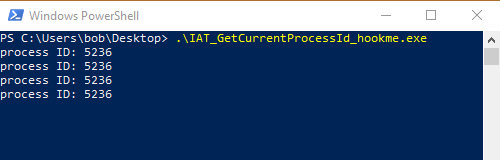
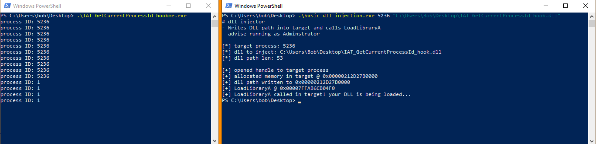
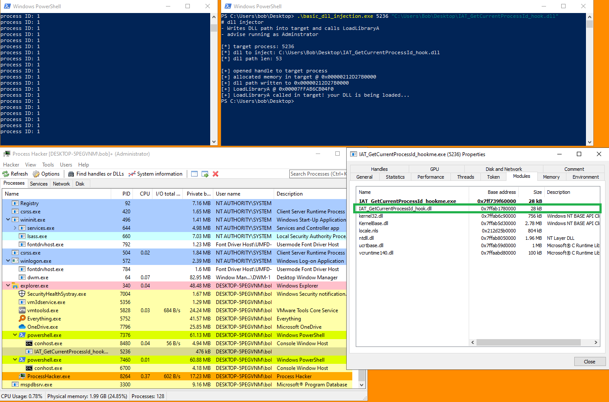

# Demo #1 - Hooking GetCurrentProcessId
Here I'm going to hook
GetCurrentProcessId() to return 1 instead of the real process ID.
This demo is running on
Windows 10 2004 19041.630 and all of the code is compiled as x64.
This includes:
• the target program
• the DLL to inject
• the DLL injector
## Setup / Code
Here is the program I'll be injecting into.
It simply prints the current process's process ID every 3 seconds.
#include <stdio.h>
#include <Windows.h>
int main(void)
{
DWORD process_id = 0;
while (TRUE)
{
process_id = GetCurrentProcessId();
printf("process ID: %d \n", process_id);
Sleep(3000);
}
return 0;
}
Here's my DLL injection code:
(writes DLL path into target -> creates thread in target to call LoadLibraryA)
#include <stdio.h>
#include <Windows.h>
int main(int argc, char* argv[])
{
BOOL b_ret = TRUE;
LPVOID LoadLibraryA_address = NULL;
char* dll_path = NULL;
SIZE_T dll_path_len = 0;
int target_pid = 0;
HANDLE h_target = NULL;
HANDLE h_target_thread = NULL;
LPVOID target_memory = NULL;
printf("# dll injector \n");
printf("- Writes DLL path into target and calls LoadLibraryA \n");
printf("- advise running as Adminstrator \n");
printf("\n");
if (argc != 3)
{
printf("[-] not enough arguments :/ \n");
printf("usage: dll_injector.exe [target pid] [dll path] \n");
return EXIT_FAILURE;
}
target_pid = atoi(argv[1]);
dll_path = argv[2];
dll_path_len = strlen(dll_path);
printf("[*] target process: %d \n", target_pid);
printf("[*] dll to inject: %s \n", dll_path);
printf("[*] dll path len: %lld \n\n", dll_path_len);
// open handle to target process
h_target = OpenProcess(PROCESS_ALL_ACCESS, FALSE, target_pid);
if (h_target == NULL)
{
printf("[-] failed to open handle to target process: %d \n", GetLastError());
goto cleanup;
}
else
printf("[+] opened handle to target process \n");
// allocate space for DLL path in target
target_memory = VirtualAllocEx(h_target, NULL, dll_path_len, MEM_COMMIT | MEM_RESERVE, PAGE_READWRITE);
if (target_memory == NULL)
{
printf("[-] failed to allocate memory in target process: %d \n", GetLastError());
goto cleanup;
}
else
printf("[+] allocated memory in target @ 0x%p \n", target_memory);
// write DLL path into target
b_ret = WriteProcessMemory(h_target, target_memory, (LPVOID)dll_path, dll_path_len, NULL);
if (b_ret == FALSE)
{
printf("[-] failed to write DLL path into target: %d \n", GetLastError());
VirtualFreeEx(h_target, target_memory, dll_path_len, MEM_RELEASE);
goto cleanup;
}
else
printf("[+] dll path written to 0x%p \n", target_memory);
// grab address of LoadLibraryA
/*
The LoadLibraryA function exists in Kernel32.dll
Kernel32.dll is loaded into every running process
Kernel32.dll lives at the same location in every process:
- 0x753b0000 on 32bit
- 0x7ff9cfe10000 on 64bit
Therefore, we can simply grab the address of LoadLibraryA in our own process,
and it will be the same address for every other running process on the system.
*/
LoadLibraryA_address = (LPVOID)GetProcAddress(GetModuleHandleA("Kernel32.dll"), "LoadLibraryA");
printf("[+] LoadLibraryA @ 0x%p \n", LoadLibraryA);
// create thread in target process to execute LoadLibraryA and load our DLL
h_target_thread = CreateRemoteThread(h_target, NULL, 0, (LPTHREAD_START_ROUTINE)LoadLibraryA_address, target_memory, 0, NULL);
if (h_target_thread == NULL)
{
printf("[-] failed to create thread in target process: %d \n", GetLastError());
VirtualFreeEx(h_target, target_memory, dll_path_len, MEM_RELEASE);
goto cleanup;
}
else
printf("[+] LoadLibraryA called in target! your DLL is being loaded... \n");
// wait for remote thread to exit
//WaitForSingleObject(h_target_thread, INFINITE);
// free remote memory containing DLL path
//VirtualFreeEx(h_target, target_memory, dll_path_len, MEM_RELEASE);
cleanup:
if (h_target) CloseHandle(h_target);
if (h_target_thread) CloseHandle(h_target);
return 0;
}
And here's the IAT hooking code.
This is compiled as a DLL and will be injected into the target process.
It hooks
GetCurrentProcessId().
The code is farily well commented so hopefully it's be readable.
#include <stdio.h>
#include <Windows.h>
// typedefs of hooked functions
typedef int(__stdcall* t_GetCurrentProcessId)();
t_GetCurrentProcessId og_GetCurrentProcessId;
int hooked_GetCurrentProcessId()
{
return 1;
}
void HookFunctionsInIAT(void)
{
LPVOID image_base = NULL;
PIMAGE_DOS_HEADER dos_header = NULL;
PIMAGE_NT_HEADERS pe_header = NULL;
PIMAGE_IMPORT_DESCRIPTOR import_directory = NULL;
PIMAGE_THUNK_DATA import_lookup_table = NULL;
PIMAGE_THUNK_DATA import_address_table = NULL;
PIMAGE_IMPORT_BY_NAME import_name = NULL;
DWORD old_protect = 0;
// grab base address, DOS header, and PE header of host process
image_base = (LPVOID)GetModuleHandleA(NULL);
dos_header = (PIMAGE_DOS_HEADER)image_base;
pe_header = (PIMAGE_NT_HEADERS)((DWORD_PTR)dos_header + (DWORD_PTR)dos_header->e_lfanew);
import_directory = (PIMAGE_IMPORT_DESCRIPTOR)((DWORD_PTR)image_base + pe_header->OptionalHeader.DataDirectory[IMAGE_DIRECTORY_ENTRY_IMPORT].VirtualAddress);
// loop through DLLs in Import Directory
while (import_directory->Name != 0)
{
import_lookup_table = (PIMAGE_THUNK_DATA)((DWORD_PTR)image_base + import_directory->OriginalFirstThunk);
import_address_table = (PIMAGE_THUNK_DATA)((DWORD_PTR)image_base + import_directory->FirstThunk);
// loop through imported functions in DLL
while (import_lookup_table->u1.AddressOfData != 0)
{
// if import by ordinal, skip because we can't hook ordinals
if (IMAGE_SNAP_BY_ORDINAL(import_lookup_table->u1.Ordinal))
{
continue;
}
// if import by name
else
{
// grab import name from IMAGE_IMPORT_NAME struct
import_name = (PIMAGE_IMPORT_BY_NAME)((DWORD_PTR)image_base + import_lookup_table->u1.AddressOfData);
// if we've found GetCurrentProcessId
if (strcmp(import_name->Name, "GetCurrentProcessId") == 0)
{
// save the function address
og_GetCurrentProcessId = (t_GetCurrentProcessId)import_address_table->u1.Function;
// make writable the location of the function in the Import Address Table
#ifdef _WIN64
VirtualProtect(&import_address_table->u1.Function, sizeof(ULONGLONG), PAGE_READWRITE, &old_protect);
#else
VirtualProtect(&import_address_table->u1.Function, sizeof(DWORD), PAGE_READWRITE, &old_protect);
#endif
// write address of hooked_GetCurrentProcessId function into IAT
import_address_table->u1.Function = (DWORD_PTR)hooked_GetCurrentProcessId;
// revert Import Address Table back to original state
#ifdef _WIN64
VirtualProtect(&import_address_table->u1.Function, sizeof(ULONGLONG), old_protect, &old_protect);
#else
VirtualProtect(&import_address_table->u1.Function, sizeof(DWORD), old_protect, &old_protect);
#endif
break;
}
}
import_lookup_table++;
import_address_table++;
}
import_directory++;
}
return;
}
BOOL WINAPI DllMain(HINSTANCE hinstDLL, DWORD fdwReason, LPVOID lpReserved)
{
switch (fdwReason)
{
case DLL_PROCESS_ATTACH:
HookFunctionsInIAT();
break;
case DLL_THREAD_ATTACH:
break;
case DLL_THREAD_DETACH:
break;
case DLL_PROCESS_DETACH:
break;
}
return TRUE;
}
## Demo
I run my target program.
GetCurrentProcessId() is reporting the current process ID as
5236I inject my DLL into the target with my injector.
When attached, my DLL then hooks
GetCurrentProcessId in the Import Address Table.
The hook is successfull!
We can see that
GetCurrentProcessId is now returning
1.
That's it! Simple as that.
From Process Hacker, we can see that our DLL is loaded in the target process.
